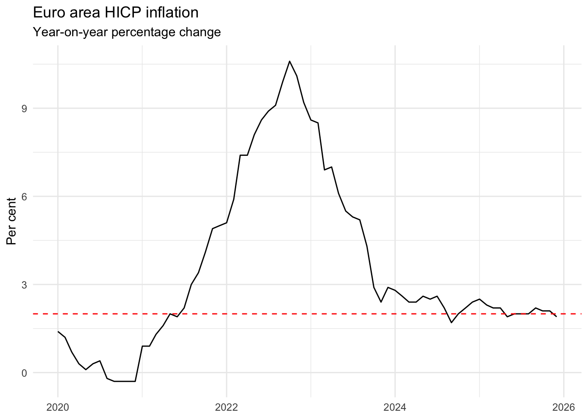
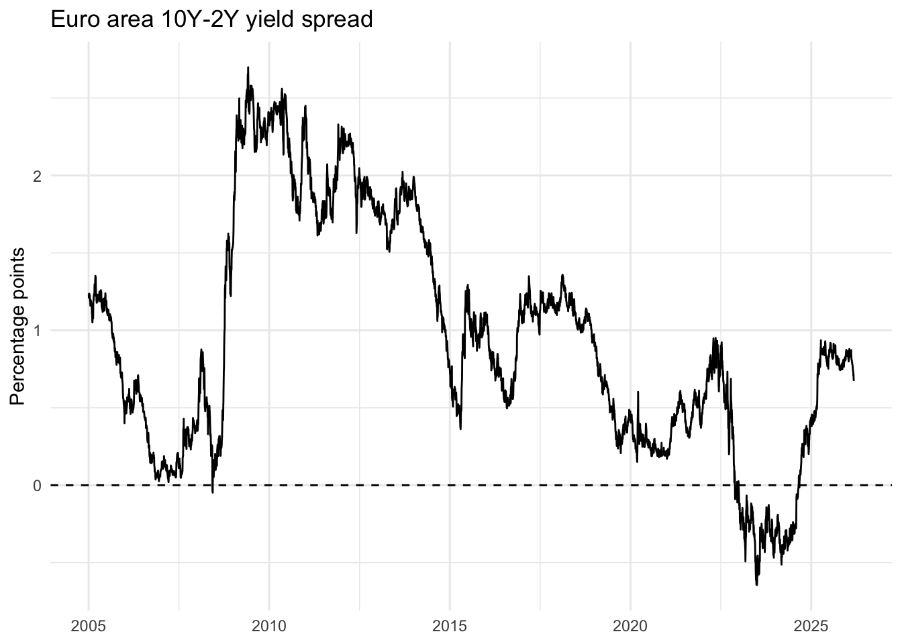
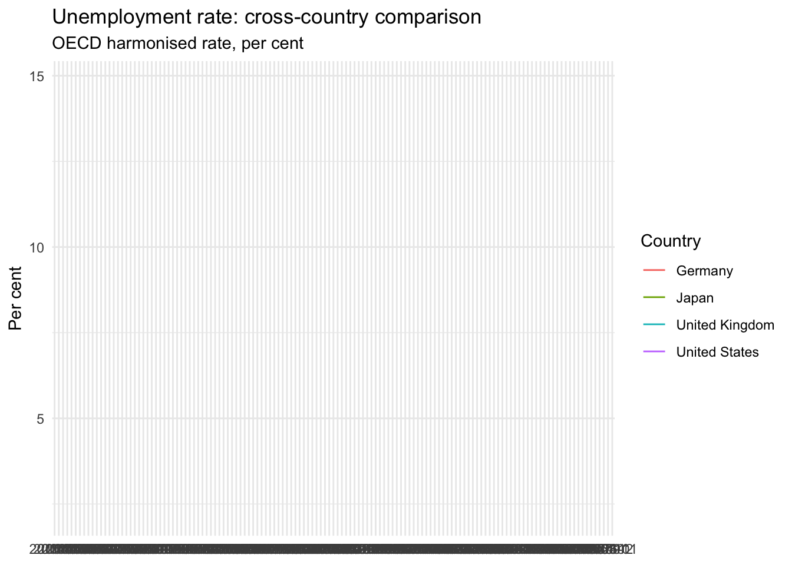
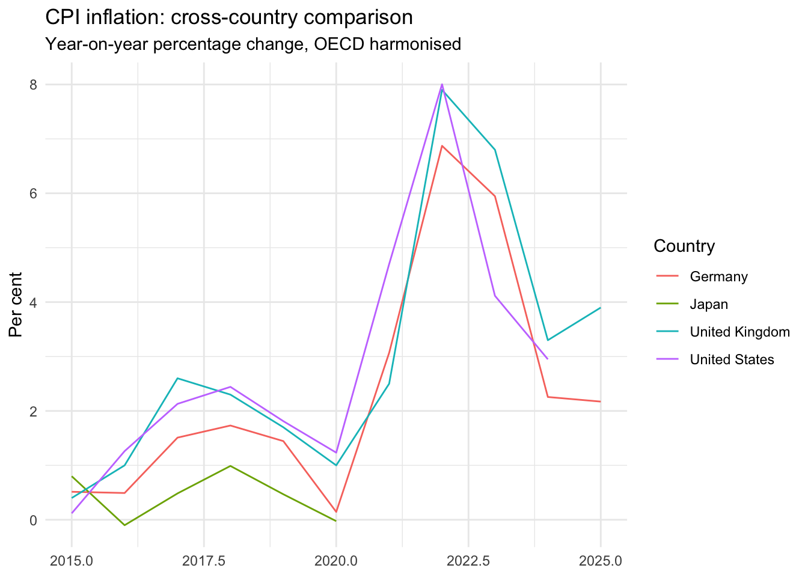
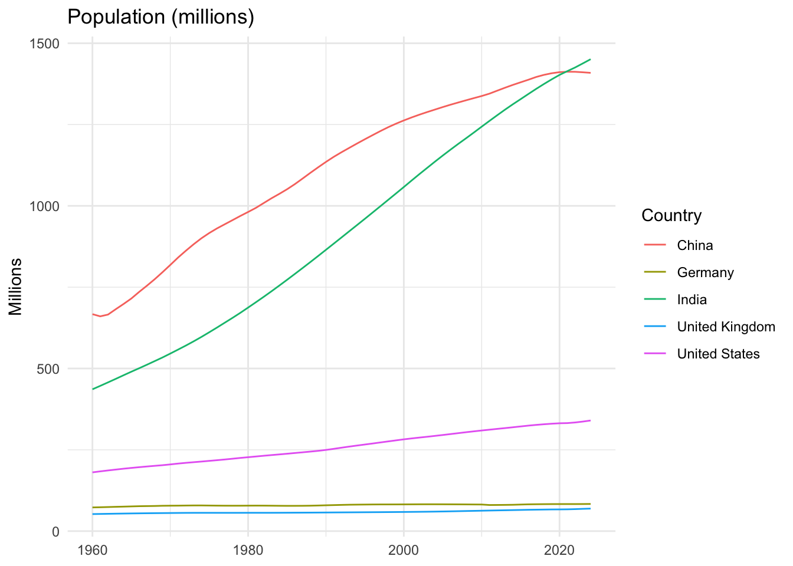

library(readecb)3 European and International Data
Macroeconomics rarely stops at national borders. Comparing inflation across the euro area, tracking ECB policy alongside the Fed, or benchmarking UK growth against the G7 — all of these require international data.
This chapter covers three major sources: the ECB Data Portal for euro area data, the OECD for harmonised cross-country statistics, and the World Bank for global development indicators. Each serves a different purpose, and knowing when to reach for which source is a skill in itself.
3.1 The European Central Bank
The European Central Bank publishes a vast statistical warehouse covering monetary policy, financial markets, and macroeconomic aggregates for the euro area and its member states. The readecb package provides access to the ECB Data Portal API, with dedicated functions for the most commonly used series and a flexible ecb_get() function for everything else.
The ECB’s data is particularly strong on high-frequency financial and monetary series — policy rates updated in real time, daily exchange rates, and monthly monetary aggregates. For macroeconomic variables like GDP and unemployment, the ECB also publishes Eurostat data, though for cross-country comparisons the OECD is often more convenient (more on this below).
3.1.1 Policy rates
The ECB sets three key interest rates: the main refinancing rate (the rate at which banks can borrow from the ECB for one week), the marginal lending facility rate (overnight borrowing), and the deposit facility rate (overnight deposits). Since September 2024, the deposit facility rate has been the primary instrument for steering monetary policy.
rates <- ecb_policy_rates(from = "1999-01")ℹ Fetching ECB policy rates✔ Fetching ECB policy rates [109ms]head(rates) date rate value
1 1999-01-01 Deposit facility rate 2.0
2 1999-01-01 Main refinancing rate 3.0
3 1999-01-01 Marginal lending rate 4.5
4 1999-01-02 Deposit facility rate 2.0
5 1999-01-02 Main refinancing rate 3.0
6 1999-01-02 Marginal lending rate 4.5The resulting data frame contains one row per date on which rates changed, with columns for each of the three rates. To plot the full history of ECB rates since the euro’s introduction, you can pass this directly to ggplot2.
3.1.2 Inflation across the euro area
The Harmonised Index of Consumer Prices (HICP) is the ECB’s target measure of inflation. Unlike national CPI measures, HICP uses a common methodology across all EU member states, making it the right choice for cross-country inflation comparisons within Europe.
hicp <- ecb_hicp(c("DE", "FR", "IT", "ES"), from = "2020-01")ℹ Fetching HICP data✔ Fetching HICP data [10ms]head(hicp) date country value
1 2020-01-01 DE 1.6
2 2020-02-01 DE 1.7
3 2020-03-01 DE 1.3
4 2020-04-01 DE 0.8
5 2020-05-01 DE 0.5
6 2020-06-01 DE 0.8You can pass ISO 2-letter country codes to ecb_hicp() to pull HICP for individual member states. Omitting the country code returns the aggregate euro area HICP. This is the series that the ECB targets at 2 per cent over the medium term.
# Euro area aggregate
hicp_ea <- ecb_hicp(from = "2020-01")ℹ Fetching HICP data✔ Fetching HICP data [14ms]ggplot(hicp_ea, aes(x = date, y = value)) +
geom_line() +
geom_hline(yintercept = 2, linetype = "dashed", colour = "red") +
labs(
title = "Euro area HICP inflation",
subtitle = "Year-on-year percentage change",
x = NULL, y = "Per cent"
) +
theme_minimal()
3.1.3 Exchange rates
The ECB publishes daily reference exchange rates for approximately 30 currencies against the euro. These are mid-market rates set at 14:15 CET each business day and are widely used as a benchmark.
fx <- ecb_exchange_rate(c("USD", "GBP"), from = "2020-01")ℹ Fetching ECB exchange rates✔ Fetching ECB exchange rates [7ms]head(fx) date currency value
1 2020-01-01 GBP 0.8492727
2 2020-02-01 GBP 0.8409460
3 2020-03-01 GBP 0.8945955
4 2020-04-01 GBP 0.8754690
5 2020-05-01 GBP 0.8868530
6 2020-06-01 GBP 0.8987814To see all available currency pairs, use list_exchange_rates(), which returns a data frame of currency codes and names.
list_exchange_rates() code currency
1 USD US dollar
2 JPY Japanese yen
3 GBP Pound sterling
4 CHF Swiss franc
5 AUD Australian dollar
6 CAD Canadian dollar
7 SEK Swedish krona
8 NOK Norwegian krone
9 DKK Danish krone
10 NZD New Zealand dollar
11 CNY Chinese yuan renminbi
12 HKD Hong Kong dollar
13 SGD Singapore dollar
14 KRW South Korean won
15 THB Thai baht
16 MYR Malaysian ringgit
17 PHP Philippine peso
18 IDR Indonesian rupiah
19 INR Indian rupee
20 BRL Brazilian real
21 MXN Mexican peso
22 ZAR South African rand
23 TRY Turkish lira
24 PLN Polish zloty
25 CZK Czech koruna
26 HUF Hungarian forint
27 BGN Bulgarian lev
28 RON Romanian leu
29 HRK Croatian kuna
30 ISK Icelandic krona
31 ILS Israeli shekel
32 RUB Russian rouble3.1.4 Yield curves
Government bond yields are essential for understanding financial conditions and market expectations. The ECB publishes estimated yield curves for euro area sovereign bonds at various maturities.
yields <- ecb_yield_curve("10Y", from = "2005-01")ℹ Fetching yield curve data✔ Fetching yield curve data [24ms]head(yields) date tenor value
1 2005-01-03 10Y 3.661840
2 2005-01-04 10Y 3.668323
3 2005-01-05 10Y 3.695968
4 2005-01-06 10Y 3.652554
5 2005-01-07 10Y 3.621110
6 2005-01-10 10Y 3.621085A particularly useful exercise is to compare short- and long-term yields to construct a yield curve slope measure. An inverted yield curve — where short-term rates exceed long-term rates — has historically been a recession predictor.
short <- ecb_yield_curve("2Y", from = "2005-01")ℹ Fetching yield curve data✔ Fetching yield curve data [25ms]long <- ecb_yield_curve("10Y", from = "2005-01")ℹ Fetching yield curve data✔ Fetching yield curve data [16ms]
Attaching package: 'dplyr'The following objects are masked from 'package:stats':
filter, lagThe following objects are masked from 'package:base':
intersect, setdiff, setequal, unionspread <- inner_join(
short |> select(date, short = value),
long |> select(date, long = value),
by = "date"
) |>
mutate(spread = long - short)
ggplot(spread, aes(x = date, y = spread)) +
geom_line() +
geom_hline(yintercept = 0, linetype = "dashed") +
labs(
title = "Euro area 10Y-2Y yield spread",
x = NULL, y = "Percentage points"
) +
theme_minimal()
3.1.5 Other ECB series
The readecb package also provides functions for EURIBOR (ecb_euribor()), the euro short-term rate (ecb_estr()), money supply (ecb_money_supply()), GDP (ecb_gdp()), unemployment (ecb_unemployment()), and government debt (ecb_government_debt()). The general-purpose ecb_get() function can retrieve any series from the ECB Data Portal if you know the dataflow and series key.
# Euro area M3 money supply
m3 <- ecb_money_supply("M3", from = "2000-01")ℹ Fetching M3 data✔ Fetching M3 data [8ms]# Euro area GDP growth
gdp_ea <- ecb_gdp(from = "2000-01")ℹ Fetching euro area GDP✔ Fetching euro area GDP [9ms]3.2 The OECD
library(readoecd)The Organisation for Economic Co-operation and Development publishes harmonised data across its 38 member countries, plus key partner economies. The OECD’s great strength is comparability: its statisticians take national data and apply consistent definitions and methodologies, making it the natural choice for cross-country analysis.
The readoecd package wraps the OECD’s SDMX REST API, providing dedicated functions for popular datasets including GDP, CPI, unemployment, and more.
3.2.1 GDP
The OECD publishes GDP data on a comparable basis across member countries, making it the natural choice for cross-country growth comparisons. The get_oecd_gdp() function returns GDP in PPP-adjusted terms for the countries you specify.
country country_name year series value unit
77 DEU Germany 2000 GDP 2258652 Millions USD PPP, current prices
80 DEU Germany 2001 GDP 2361314 Millions USD PPP, current prices
56 DEU Germany 2002 GDP 2434538 Millions USD PPP, current prices
83 DEU Germany 2003 GDP 2500900 Millions USD PPP, current prices
86 DEU Germany 2004 GDP 2620152 Millions USD PPP, current prices
58 DEU Germany 2005 GDP 2664894 Millions USD PPP, current prices3.2.2 Unemployment
Cross-country unemployment comparisons are straightforward with harmonised OECD data. National definitions of unemployment vary slightly, but the OECD applies a consistent ILO-based methodology.
country country_name period series value unit
397 DEU Germany 2015-01 Unemployment rate 4.5 % of labour force
398 DEU Germany 2015-02 Unemployment rate 4.5 % of labour force
399 DEU Germany 2015-03 Unemployment rate 4.5 % of labour force
400 DEU Germany 2015-04 Unemployment rate 4.4 % of labour force
401 DEU Germany 2015-05 Unemployment rate 4.4 % of labour force
402 DEU Germany 2015-06 Unemployment rate 4.4 % of labour forceggplot(unemp_oecd, aes(x = period, y = value, colour = country_name)) +
geom_line() +
labs(
title = "Unemployment rate: cross-country comparison",
subtitle = "OECD harmonised rate, per cent",
x = NULL, y = "Per cent",
colour = "Country"
) +
theme_minimal()`geom_line()`: Each group consists of only one observation.
ℹ Do you need to adjust the group aesthetic?
3.2.3 Inflation
The OECD publishes CPI data using a consistent methodology, making it straightforward to compare inflation across countries that use different national indices. This is especially useful when comparing the UK (which uses CPI and CPIH) with the US (which uses CPI-U and PCE) and the euro area (which uses HICP).
country country_name year series value unit
33 DEU Germany 2015 CPI_INFLATION 0.5144210 % change, year-on-year
32 DEU Germany 2016 CPI_INFLATION 0.4917486 % change, year-on-year
31 DEU Germany 2017 CPI_INFLATION 1.5094970 % change, year-on-year
30 DEU Germany 2018 CPI_INFLATION 1.7321680 % change, year-on-year
29 DEU Germany 2019 CPI_INFLATION 1.4456670 % change, year-on-year
28 DEU Germany 2020 CPI_INFLATION 0.1448705 % change, year-on-yearggplot(cpi_oecd, aes(x = year, y = value, colour = country_name)) +
geom_line() +
labs(
title = "CPI inflation: cross-country comparison",
subtitle = "Year-on-year percentage change, OECD harmonised",
x = NULL, y = "Per cent",
colour = "Country"
) +
theme_minimal()
3.2.4 Discovering OECD countries
To see which countries are available in the readoecd package, use list_oecd_countries():
list_oecd_countries() iso3 name
1 AUS Australia
2 AUT Austria
3 BEL Belgium
4 CAN Canada
5 CHL Chile
6 COL Colombia
7 CRI Costa Rica
8 CZE Czech Republic
9 DNK Denmark
10 EST Estonia
11 FIN Finland
12 FRA France
13 DEU Germany
14 GRC Greece
15 HUN Hungary
16 ISL Iceland
17 IRL Ireland
18 ISR Israel
19 ITA Italy
20 JPN Japan
21 KOR Korea
22 LVA Latvia
23 LTU Lithuania
24 LUX Luxembourg
25 MEX Mexico
26 NLD Netherlands
27 NZL New Zealand
28 NOR Norway
29 POL Poland
30 PRT Portugal
31 SVK Slovak Republic
32 SVN Slovenia
33 ESP Spain
34 SWE Sweden
35 CHE Switzerland
36 TUR Turkiye
37 GBR United Kingdom
38 USA United States3.3 The World Bank
For broader international comparisons — especially involving emerging and developing economies — the World Bank’s World Development Indicators (WDI) are unmatched. The WDI covers over 200 countries and territories with more than 1,600 indicators spanning income, health, education, infrastructure, and the environment. The data often extends back to the 1960s, making it the best source for long historical series.
The WDI package on CRAN provides a clean interface to the World Bank API. The key function is WDI(), which takes an indicator code, a list of countries, and a date range.
3.3.1 GDP per capita (PPP)
Purchasing power parity (PPP) adjustments account for differences in price levels across countries, making GDP per capita figures more meaningful for comparing living standards. The World Bank publishes GDP per capita in constant 2021 international dollars, which controls for both inflation and price-level differences.
country iso2c iso3c year NY.GDP.PCAP.PP.KD
1 Canada CA CAN 2024 56706.82
2 Canada CA CAN 2023 57517.44
3 Canada CA CAN 2022 58321.06
4 Canada CA CAN 2021 56995.12
5 Canada CA CAN 2020 54092.88
6 Canada CA CAN 2019 57583.85The indicator code NY.GDP.PCAP.PP.KD stands for GDP per capita, PPP, in constant 2021 international dollars. These codes are not intuitive, but you can search for them using WDIsearch().
WDIsearch("gdp per capita.*ppp") indicator name
692 6.0.GDPpc_constant GDP per capita, PPP (constant 2011 international $)
13792 NY.GDP.PCAP.PP.CD GDP per capita, PPP (current international $)
13793 NY.GDP.PCAP.PP.KD GDP per capita, PPP (constant 2021 international $)
13794 NY.GDP.PCAP.PP.KD.87 GDP per capita, PPP (constant 1987 international $)
13795 NY.GDP.PCAP.PP.KD.ZG GDP per capita, PPP annual growth (%)3.3.2 Population
Population data is essential for computing per-capita measures and for understanding the demographic context of economic performance. The World Bank’s population series is one of the most comprehensive available.
pop <- WDI(
indicator = "SP.POP.TOTL",
country = c("GB", "US", "CN", "IN", "DE"),
start = 1960,
end = 2024
)
ggplot(pop, aes(x = year, y = SP.POP.TOTL / 1e6, colour = country)) +
geom_line() +
labs(
title = "Population (millions)",
x = NULL, y = "Millions",
colour = "Country"
) +
theme_minimal()
3.3.3 Development indicators
The WDI’s greatest strength is its breadth. Beyond GDP and population, you can pull indicators on poverty rates, educational attainment, life expectancy, CO2 emissions, internet penetration, and hundreds more. This makes it the natural source for the cross-country analysis in Chapter 14.
# Life expectancy at birth
life_exp <- WDI(
indicator = "SP.DYN.LE00.IN",
country = c("GB", "US", "DE", "JP", "CN", "IN", "BR"),
start = 1990,
end = 2024
)
# CO2 emissions per capita (tonnes CO2 equivalent)
co2 <- WDI(
indicator = "EN.GHG.CO2.PC.CE.AR5",
country = c("GB", "US", "DE", "CN", "IN"),
start = 1990,
end = 2024
)3.4 Choosing the right source
For many macroeconomic variables — GDP, inflation, unemployment — the same data is published by multiple organisations. Choosing the right source depends on what you are trying to do.
The ECB is the best source for euro area financial and monetary data. It publishes daily exchange rates, real-time policy rate changes, and high-frequency money and credit aggregates. If you need euro area HICP inflation, government bond yields, or bank lending rates, the ECB is the primary source. Its data is timely and granular but covers only the euro area and EU member states.
The OECD excels at cross-country comparisons among advanced economies. Because OECD statisticians harmonise national data to common definitions, you can meaningfully compare UK CPI with US CPI or German GDP growth with Japanese GDP growth. The OECD also publishes useful composite indicators (like the CLI) that are not available elsewhere. The trade-off is that OECD data is often published with a longer lag than national sources, and it covers only OECD member countries plus a handful of partners.
The World Bank is the right choice for global coverage and long time series. It covers over 200 countries, including emerging and developing economies that neither the ECB nor the OECD cover well. Its development indicators span topics well beyond traditional macro. The drawback is lower frequency (mostly annual) and longer publication lags.
The table below summarises when to use each source:
| Variable | ECB | OECD | World Bank |
|---|---|---|---|
| Euro area GDP | High-frequency, quarterly | Cross-country comparison with G7 | Long historical series, annual |
| Inflation | HICP for euro area members | Harmonised CPI for 38+ countries | CPI for 200+ countries, annual |
| Interest rates | Daily policy rates, yields | Policy rates (monthly) | Lending rates (annual) |
| Exchange rates | Daily ECB reference rates | Monthly averages | Annual averages |
| Development indicators | Not available | Limited | Comprehensive (1,600+ indicators) |
As a rule of thumb: use the national source (ONS, ECB) for the highest-frequency, most timely data on a single country or area; use the OECD for comparing a handful of advanced economies on a like-for-like basis; and use the World Bank for global coverage or development-oriented analysis.
3.5 Exercises
Using
readecb, compare HICP inflation in Germany, France, Italy, and Spain since 2020. Which country had the highest peak inflation?Pull the EUR/USD exchange rate with
ecb_exchange_rate("USD")and plot it alongside ECB policy rate changes. Do you see a relationship?Using
readoecd, download the OECD Composite Leading Indicator for the G7 countries from 2018 onwards. Plot all seven on the same chart. Which country’s CLI fell furthest during the Covid-19 pandemic?Using
WDI, download GDP per capita (PPP) for the G7 countries from 2000 to the latest available year. Which country has the highest GDP per capita? Has the ranking changed over the period?Download euro area CPI inflation from both the ECB (
ecb_hicp()) and the OECD. Compare the two series. Are there differences? Why might they arise?Using the World Bank, download life expectancy at birth for ten countries of your choice over the period 1990–2024. How did the Covid-19 pandemic show up in the data?